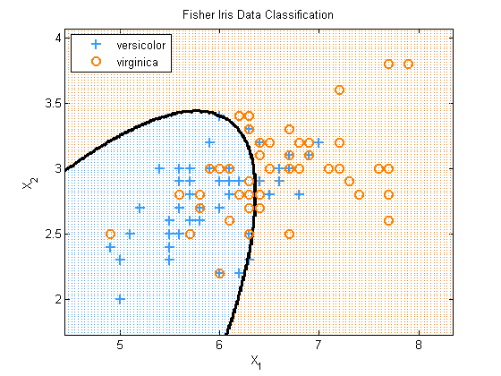
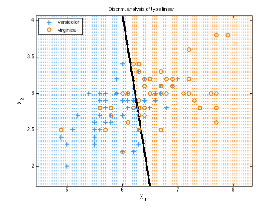
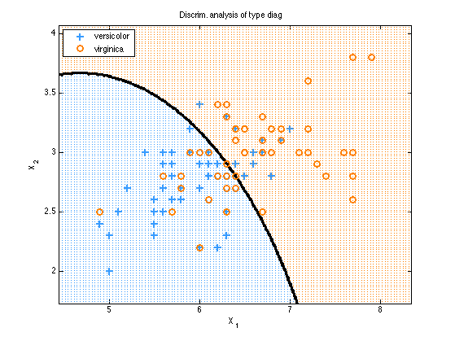

Discriminant Analysis On the Fisher Iris Data
loadData('fisherIrisData')
X = meas(51:end, 1:2);
labels = species(51:end);
[y, support] = canonizeLabels(labels);
types = {'quadratic', 'linear', 'diag'};
for tt=1:length(types)
model = discrimAnalysisFit(X, y, types{tt});
h = plotDecisionBoundary(X, y, @(Xtest)discrimAnalysisPredict(model, Xtest));
title(sprintf('Discrim. analysis of type %s', types{tt}));
if ~isOctave
legend(h, support, 'Location', 'NorthWest');
set(gca, 'Xtick', 5:8, 'Ytick', 2:0.5:4);
end
xlabel('X_1'); ylabel('X_2');
end
  